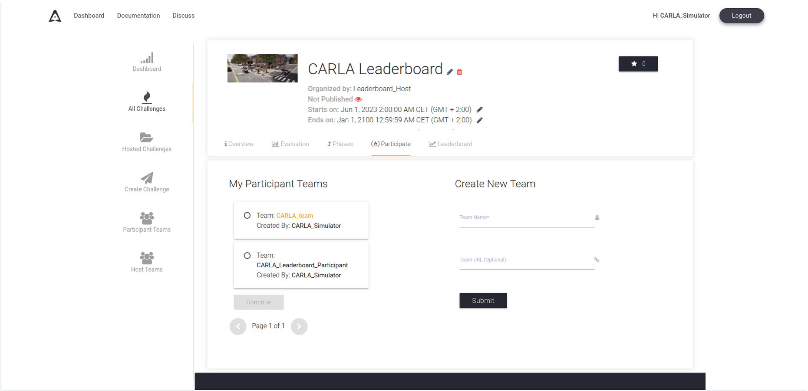
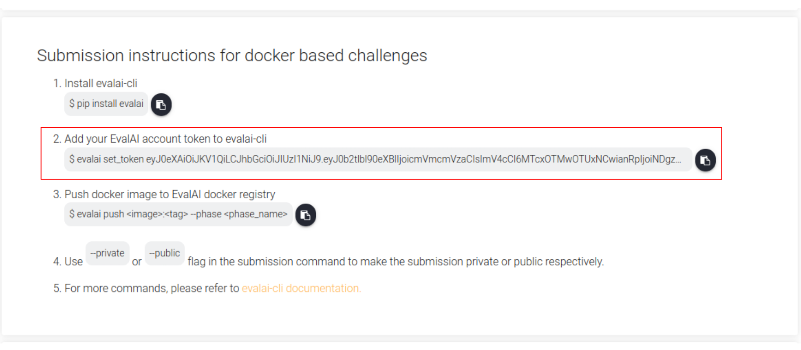
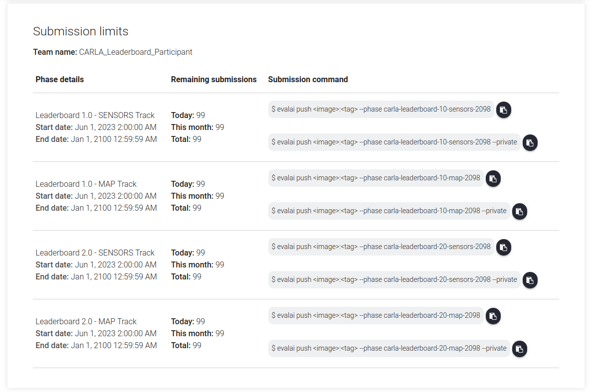

为排行榜2.0版提交代理
笔记
将您的代理提交给 Carla 自动驾驶排行榜，即表示您接受了使用条款。本页介绍了提交Leaderboard 2.0版本的代理，如果您使用的是Leaderboard1.0版本，请参阅本提交指南。
一般步骤
为了创建并提交您的代理，您应该拥有排行榜项目和 scenario_runner 的副本。如果不是这种情况，请先访问“入门”部分。
- 创建一个 dockerfile 来构建您的代理
为了让 Carla 排行榜评估您的代理，需要将其封装在 Docker 镜像中。要想成功，您必须能够在 docker 内运行带有排行榜的代理。您可以从头开始创建图像，也可以遵循以下准则：
- 将您的代码托管在
${LEADERBOARD_ROOT}外面。我们将该目录称为${TEAM_CODE_ROOT}对于基于 ROS 的代理，这应该是您的 ROS 工作区。 - 利用存储库中提供的示例 Docker 文件之一，其中场景运行器和排行榜所需的所有依赖项均已设置。基于 Python 的代理可以使用此示例 Docker，而基于 ROS 的代理可以在此处使用其 Docker 。包括代理所需的依赖项和附加包。我们建议您在由标签“BEGINNING OF USER COMMANDS”和“END OF USER COMMANDS”分隔的区域中添加新命令。
- 更新变量
TEAM_AGENT以设置代理文件和TEAM_CONFIG，如果需要配置文件进行初始化。不要更改路径“/workspace/team_code”的其余部分。 - 确保您想要获取的任何内容都在内部，
${HOME}/agent_sources.sh因为在其他任何地方添加的源都不会被调用。在云中运行代理之前会自动获取此文件。
注意
请注意，当您将条目提交到云时，您对排行榜或场景运行程序存储库所做的任何更改都将被覆盖。
将您的代理构建到 docker 镜像中
dockerfile 准备就绪后，您现在可以通过运行make_docker.sh脚本来创建它，该脚本会在该名称下生成 docker 映像leaderboard-user。
${LEADERBOARD_ROOT}/scripts/make_docker.sh [--ros-distro|-r ROS_DISTRO]
该脚本确保正确定义所有所需的环境变量，然后将其内容复制到创建的 Dockerfile 中。建议将这些环境变量作为您的${HOME}/.bashrc文件的一部分，并包含以下内容：
${CARLA_ROOT}${SCENARIO_RUNNER_ROOT}${LEADERBOARD_ROOT}${TEAM_CODE_ROOT}${ROS_DISTRO}（仅 ROS 代理需要）
请随意调整此脚本以复制您认为合适的其他文件和资源。
注意
您可以通过在计算机上本地运行排行榜来测试您的 docker 映像
我们还想重点介绍 排行榜代理 存储库，其中包含多个旨在与 Leaderboard 2.0 配合使用的代理，以及将它们封装在 Docker 中所需的文件。
在Eval AI注册新用户
我们Eval AI的合作伙伴开发了排行榜的用户界面。要提交内容，您需要在网站上注册用户。
注意
请务必填写您的用户隶属关系，否则您可能不会被接受参加挑战。
创建新团队
在 Eval AI 注册用户后，通过单击“参与者团队”部分创建一个新团队，如下所示。所有参与者都需要在 Carla 排行榜 2.0 中注册一个团队。
 AlphaDrive UI 中的团队创建屏幕。
AlphaDrive UI 中的团队创建屏幕。
申请加入 Carla 排行榜
转至“所有挑战”部分并找到 Carla 排行榜挑战，或使用 此链接 。选择“参与”，然后选择一个参与团队来申请挑战。您需要等待 Carla 排行榜管理员验证您的团队。一旦您的团队通过验证，您就可以开始提交。
 基准部分。
提交您的意见
一旦您的团队经过验证，您就可以提交。在“概述”选项卡中，您将找到有关 Carla 排行榜的一般信息，请前往“提交”部分进行提交。您将在那里找到提交说明。
您需要使用 pip 安装 EvalAI CLI：
pip install evalai
接下来，您需要使用以下命令通过令牌来识别您的用户：
evalai set_token <token>
您可以从 EvalAI 网站的“提交”部分检索您的令牌。您可以直接从提交说明中复制并粘贴命令：

CLI 提交说明。
注意
该令牌是特定于您的用户的，每个用户都会在网站的此部分中看到不同的令牌。不要共享令牌，否则提交作者将会产生混淆。
使用以下命令推送 Docker 镜像：
evalai push <image>:<tag> --phase <phase_name>
您可以在四个轨迹之间进行选择（在 EvalAI 网站中称为阶段）：
- 排行榜 2.0 - 传感器
-
排行榜2.0 - 地图
-
排行榜 1.0 - 传感器
- 排行榜 1.0 - 地图
对于排行榜 2.0 赛道，您必须首先完成相应的资格任务：
- 排行榜 2.0 - SENSORS 预选赛赛道
- 排行榜 2.0 - MAP 预选赛赛道
注意
在涉及排行榜的年度比赛期间，某些赛道可能会暂时关闭。请密切关注排行榜网站和 Discord 论坛，了解赛道何时可能关闭提交。
您可以直接从以下部分复制并粘贴，以确保提交到正确的轨道，并将<image>和替换<tag>为适合您的 Docker 映像的值：

要提交到每个轨迹的 CLI 命令。
检查您提交的数据
创建提交后，您可以转到此My Submissions部分查看所有提交的详细信息。
状态显示提交状态的高级说明。所有提交都从状态开始，一旦在后端开始运行，SUBMITTED就会更改为。完成后，如果模拟过程中一切顺利，它将更改为PARTIALLY_EVALUATED，或者如果发生意外情况，则更改为 FINISHEDFAILED 。
失败的提交可以恢复，这将继续提交，而不重复已经完成的路线。这些将具有RESUMED状态，而不是SUBMITTED直到它们开始运行。
用户可以随时取消提交、停止提交并将其状态更改为CANCELLED。
任何提交都可以重新启动，使用相同提交的 docker 创建一个新的提交。如果提交正在运行，它将自动取消。
为了获得提交的结果，请访问 Stdout file 提供的链接。该文件包含有关提交的一些一般信息，包括使用的传感器、路线进度和最终结果，以及每条路线的状态和性能的术语表。
最后，如果您想公开提交的内容，请选中该Show on Leaderboard框，它现在将显示在Leaderboard挑战部分中。请随意编辑提交内容，其中包含有关方法名称、描述以及项目或出版物的 URL 的任何信息。